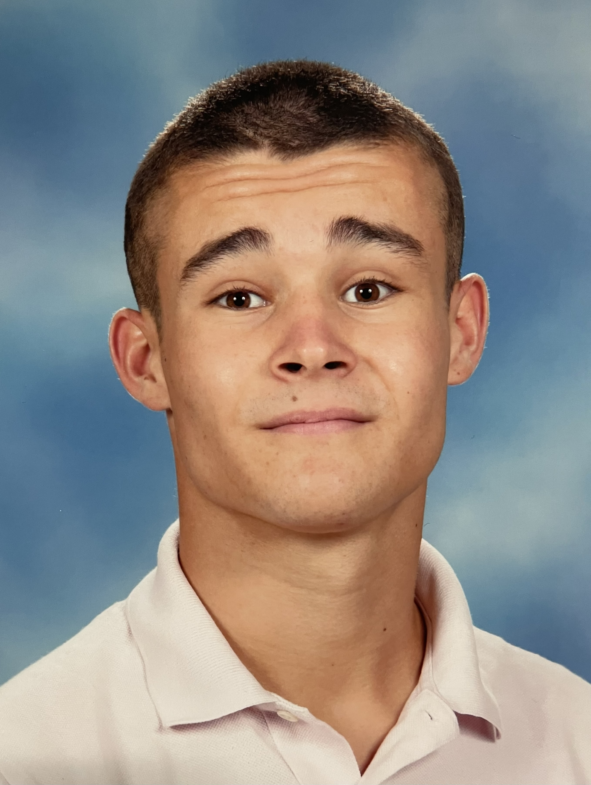

But : ce site a pour objectif de présenter tout ce que j'ai pu réaliser dans un format différent et plus complet qu'un CV — chaque case ouvre une page de présentation détaillée.

François Bordas — Portfolio
Ingénieur sérieux et très énergique — ma devise : « Être sérieux sans se prendre au sérieux ! »
Judoka en compétition, touche-à-tout et extrêmement curieux, je partage ici mes projets et réalisations.